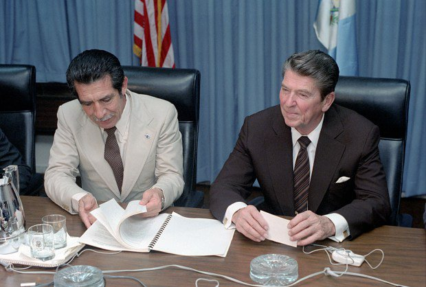

The massacres overwhelmingly targeted Indigenous communities. Most included not just the mass killing of defenseless people, but heinous acts including torture, sexual violence, and the burning of entire villages.
To visualize how this indiscriminate violence left lasting devastation in Indigenous communities, including the home regions of Claudia, Jakelin, Felipe, Juan, Wilmer, and Carlos, I transcribed data on the 600+ massacres recorded in the CEH report and mapped them.
Ch'orti' Region 1965-1970
The Ch'orti' region suffered some of the first massacres recorded by the CEH in the conflict period (1960–1996). During the mid 1960's, the Guatemalan army and CIA-trained death squads killed thousands of peasants in the eastern part of the country.
Though the guerrilla combatants in the east numbered less than 500, the military counter-insurgency claimed an estimated 6,000-8,000 lives, as the army executed suspected leftists with impunity. While the massacres recorded by the CEH represent only a fraction of the death toll, the testimony of survivors reveals the devastation wrought by the "counter-terror" campaign.
Declassified documents show that the U.S. government was fully aware of ongoing human rights violations. In March of 1968, a State Department official wrote the following in a memo to Washington:
“The counter-terror is indiscriminate...The official squads are guilty of atrocities. Interrogations are brutal, torture is used and bodies are mutilated…We have been so obsessed with the fear of insurgency that we have rationalized away our qualms and uneasiness. This is not only because we have concluded we cannot do anything about it, for we never really tried. Rather we suspected that maybe it is a good tactic, and that as long as Communists are being killed it is alright...we will stand before history unable to answer the accusations that we encouraged the Guatemalan Army to do these things.”
Q'eqchi' Region 1970-1978
Across Guatemala, state violence was used to crush any resistance to the domination of the elites and foreign corporations. In Q'eqchi' territory, peaceful resistance to land dispossession and mining projects was treated as Communist insurgency and met with indiscriminate violence.
On May 29, 1978, the Army opened fire on a crowd of Q'eqchi' peasants gathered in Panzós to protest land evictions and intimidation by the local planter elite. At least 50 were massacred, and over the next four years the army executed more than 300 ancestral authorities and community organizers involved with the land dispute.
With grassroots resistance to the exploitation of Indigenous lands stifled, foreign investments ballooned as U.S. corporations worked in tandem with the repressive elite to expand their operations. The Bank of America's clients included Guatemalan President Fernando Romeo Lucas García (1978-1982), and its investment portfolio "[read] like a "Who's Who" of human rights violators”.
Achi Region 1978-1982
The violence continued to escalate after Panzós. According to the CEH, the early 1980's were the years "most stained with death, destruction and pain in the contemporary history of the country.". Genocide was unleashed in several Indigenous territories, including that of the Maya-Achi, where the Army savagely repressed villagers who resisted the construction of a hydroelectic dam financed by the World Bank.
Achi people from the village of Río Negro refused to abandon their ancestral lands, protesting the dam that was slated to flood more than 50 square kilometers, displace thousands, and destroy at least 50 ceremonial and archeological sites. The villagers were branded guerrillas, ruthlessly massacred, and driven into the mountains where many perished from starvation. Months after the massacres, the reservoir was filled.
Chuj Region 1982
Genocide also devastated northern Huehuetenango in 1982, where the Chuj and Q'anjob'al peoples were "perceived not only as rebellious or different from the ladino group, but also antagonistic to authority and especially capable of organizing to achieve their interests." The communities' defense of their forests against incursions from a logging company were among the factors that led to the Army classifying the Chuj people as an internal enemies.
The scorched earth campaign conducted by the Army targeted entire communities for destruction, and shocking atrocities such as the San Francisco massacre prompted 80% of the population to flee. Most of the communities were left abandoned, and many people fled to Mexico where they survived in refugee camps for years.
The U.S. continued to support the government's criminal counter-insurgency campaign with money, weapons, and diplomatic support. On December 4, 1982, U.S. President Ronald Reagan met with Guatemalan dictator Efraín Ríos Montt, who would later be convicted of genocide, and stated, “I know that President Rios Montt is a man of great personal integrity and commitment...I know he wants to improve the quality of life for all Guatemalans and to promote social justice.” (Reagan Library 1982).
Massacres and human rights violations continued to devastate Indigenous communities across Guatemala through the 1980's and 1990's. By the official end of the internal armed conflict in 1996, an estimated 200,000 people were dead or disappeared, 1.5 million displaced, and incalculable damage was done to social movements and democratic progress in Guatemala.
The majority of the victims were civilians. The CEH report concluded that “at no time during the internal armed confrontation did the guerrilla groups have the military potential necessary to pose an imminent threat to the State...the State deliberately magnified the military threat of the insurgency". The excesses of government terror were felt most keenly in Indigenous communities, where massacres and executions "were not only an attempt to destroy the social base of the guerrillas, but above all, to destroy the cultural values that ensured cohesion and collective action in Mayan communities. "